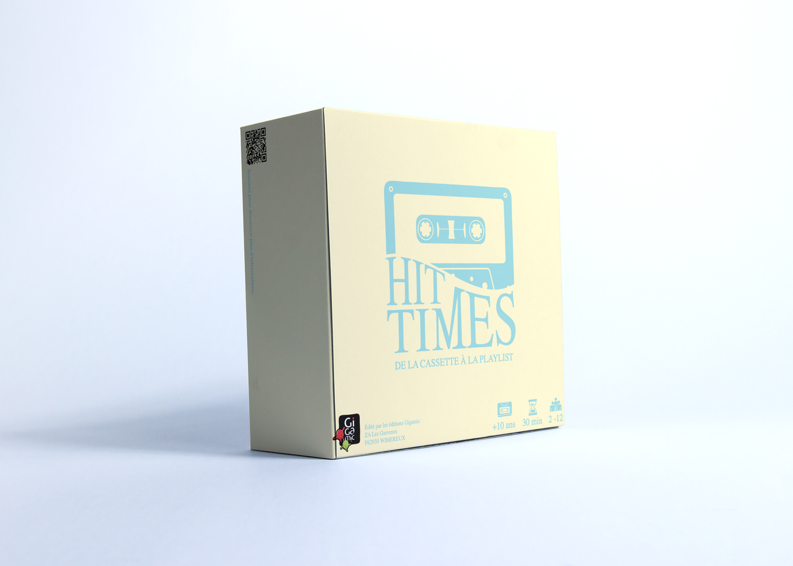
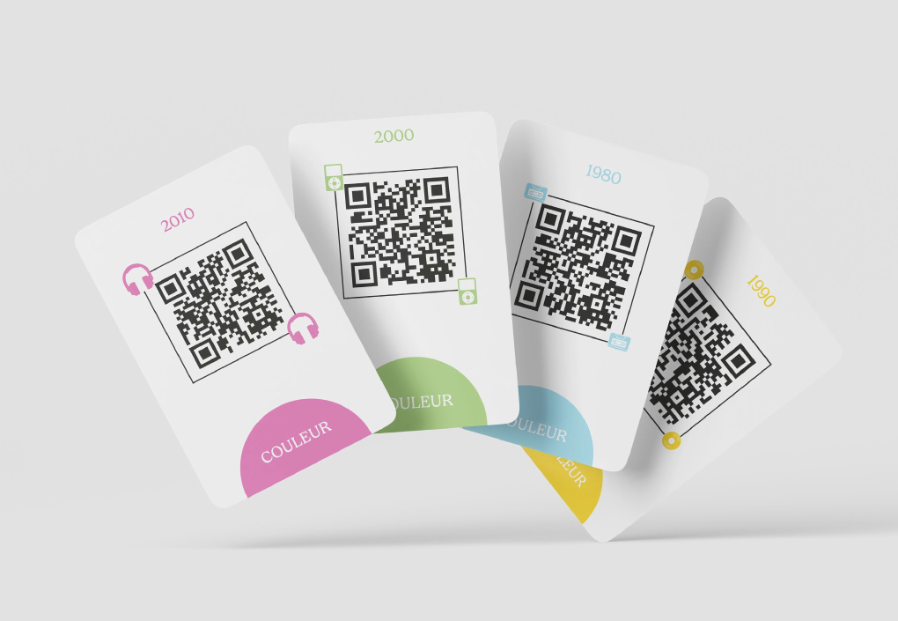
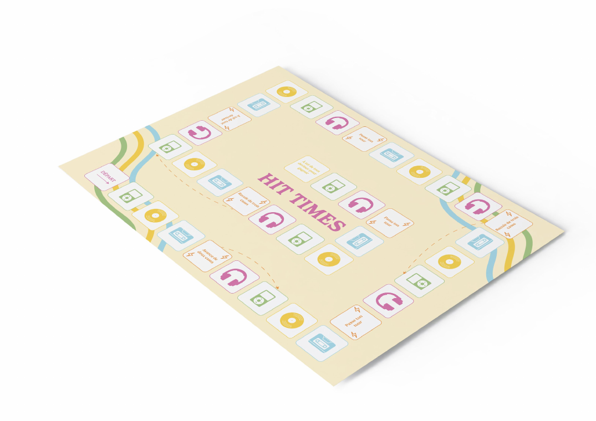
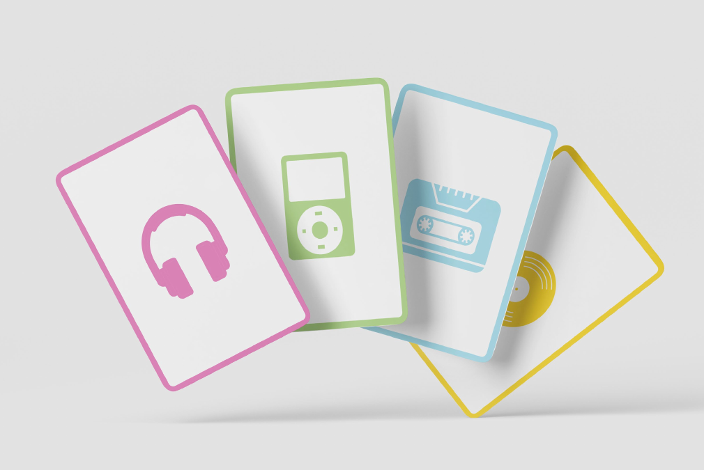
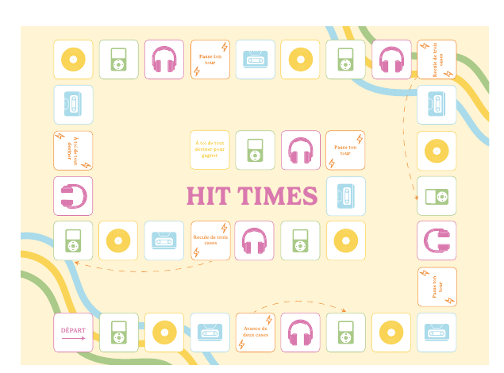
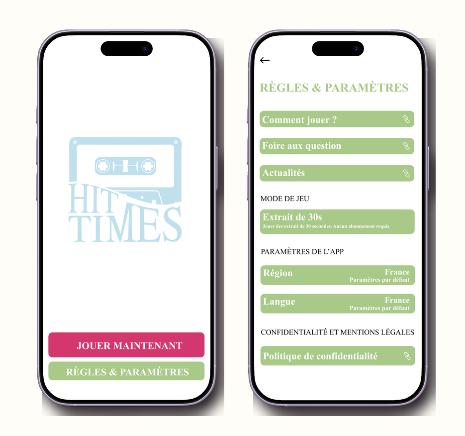

Piochez
Une carte associée à la décennie indiquée par la case.
Jeu de société musical
De la cassette à la playlist
Écoutez, devinez et traversez quatre décennies de hits. Un jeu d'ambiance coloré où chaque QR code lance un extrait, un défi et une course entre équipes.

Un voyage musical intergénérationnel, pensé pour les soirées entre amis, les familles et tous les mélomanes qui aiment tester leur mémoire autant que leur rapidité.
Principe
Chaque équipe pioche une carte de la couleur de sa case, scanne le QR code, puis tente de retrouver l'artiste, le titre ou l'année de sortie. Plus le défi est précis, plus l'équipe progresse vite sur le plateau.
Une carte associée à la décennie indiquée par la case.
Un extrait musical se lance depuis le QR code de la carte.
Artiste, titre ou année : choisissez le niveau de défi.
Les bonnes réponses font gagner jusqu'à quatre cases.
Décennies
Le bleu évoque les années 80, le jaune les années 90, le vert les années 2000 et le rose les années 2010. L'orange signale les cases spéciales qui peuvent bousculer la partie.
Année 1980
Des titres culte à reconnaître vite, portés par une identité bleu pastel inspirée des supports analogiques.

Matériel
Plateau pliable, cartes à coins arrondis, QR codes musicaux et packaging compact : chaque support reprend les codes de l'identité Hit Times pour garder une lecture simple pendant la partie.



Règles
La première équipe arrivée au bout du plateau déclenche le défi final : retrouver l'artiste, le titre et l'année de sortie de l'extrait. Si tout est juste, elle devient championne de Hit Times.
Application
L'application prolonge l'expérience du plateau : accueil, scan QR, règles, paramètres et interface musicale par décennie. Elle garde la même hiérarchie colorée pour que les joueurs se repèrent sans casser le rythme de la partie.
